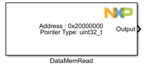
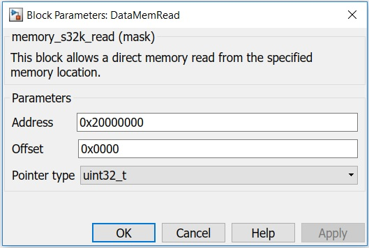

Memory Read Block
The main functionality of the block is to read data at memory location specified by the base address and the offset value. That is reading data at memory location (Base Address + Offset).
Block Image
Inputs:
- None
Outputs:
- 8/16/32bit Data at the specified memory location.
Parameters and Dialog Box
Address
The base address as a Hex value from where data will be read.
Offset
The Offset from the base address as a Hex value .
Pointer type
Data size type to use:
- uint8_t
- uint16_t
- uint32_t
Block Dependency
- None
Block Miscellaneous Details:
- None